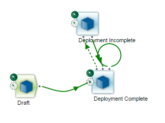
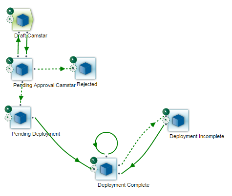

Verstehen von Standard-Arbeitsplänen zur Änderungsverwaltung
Siemens stellt standardmäßig drei Arbeitspläne zur Änderungsverwaltung zur Verfügung, die es Ihnen ermöglichen, sofort mit dem Bereitstellen von Änderungsverwaltungspaketen zu beginnen.
| • | Keine Genehmigung (No Approval) – Ermöglicht es Ihnen, Änderungsverwaltungspakete aus dem Quellsystem bereitzustellen, ohne dass Genehmigungen für das Paket erforderlich sind. |
| • | Camstar – Erfordert Genehmigungen für Änderungsverwaltungspakete vor der Bereitstellung vom Quellsystem. Diese Option aktiviert die Registerkarte "Genehmiger" auf der Seite "Paket aktualisieren", wodurch Sie die Genehmigungsvorlage und die zugewiesenen Genehmiger anzeigen können. |
| • | PLM – Erfordert eine Produktlebenszyklus-Management (PLM)-Genehmigungsentscheidung für Änderungsverwaltungspakete, bevor diese vom Quellsystem bereitgestellt werden. |
| Hinweis: | Siemens stellt den MOM PLM-Standardarbeitsplan zur Verfügung, wenn Sie den MOM-Arbeitsbereich installiert haben. Weitere Informationen finden Sie im Anhang "Teamcenter Change Management". |
Jeder Standard-Arbeitsplan enthält standardmäßige Änderungsverwaltungs-Spez. Sie können die mitgelieferten Änderungsverwaltungs-Spez. und Arbeitspläne verwenden oder Ihre eigenen erstellen, um das Geschäftsprozessmodell Ihres Unternehmens zu unterstützen. Weitere Informationen zu den Standardspezifikationen und Arbeitsplänen der Änderungsverwaltung und zum Definieren benutzerdefinierter Spezifikationen und Arbeitspläne der Änderungsverwaltung finden Sie im Opcenter Execution Medical Device and Diagnostics Modeling-Benutzerhandbuch oder im Opcenter Execution Core Modeling-Benutzerhandbuch.
Die Rollen, die dem angemeldeten Benutzer zugewiesen wurden und die erlaubten Transaktionen, die der Änderungsverwaltungs-Spez. innerhalb des angegebenen Arbeitsplans zur Änderungsverwaltung zugewiesen wurden, bestimmen Folgendes:
| • | Die Aktionen, die der angemeldete Benutzer am Änderungsverwaltungspaket durchführen kann und |
| • | Den Weg des Pakets durch den Arbeitsplan. |
Z. B. sollte ein Paket mit dem Schritt "Bereitstellung beendet" (Deployment Complete) im Arbeitsplan "Keine Genehmigung" (No Approval) für keinen Benutzer auf der Seite "Paket aktualisieren" zur Auswahl stehen, ganz gleich, über welche Berechtigungen er verfügt. Das Paket kann nur aktualisiert werden, wenn es sich im Schritt "Entwurf" auf dem Arbeitsplan befindet.
Eine Einstellung an der Änderungsverwaltungs-Spez. bestimmt, ob Modellierungsobjekt-Instanzen gesperrt oder nicht gesperrt werden, wenn das Änderungsverwaltungspaket diese Spez. (Schritt) im Änderungsverwaltungs-Arbeitsplan erreicht. Sowohl revisionierte Objekt (RO)-Instanzen als auch Named Datenobjekt (NDO)-Instanzen können gesperrt werden.
Durch Aktivieren des Kontrollkästchens "Modellierungsinstanzen in einem Änderungspaket bei dieser Spez. sperren" an einer Änderungsverwaltungs-Spez. werden sämtliche Instanzen gesperrt, wenn ein Paket diese Spez. erreicht. Durch Deaktivieren des Kontrollkästchens an einer Änderungsverwaltungs-Spez. werden sämtliche Instanzen entsperrt, wenn ein Paket diese Spez. erreicht.
Sie können Modellierungsobjekt-Instanzen mehreren Änderungsverwaltungspaketen zuweisen, unabhängig davon, ob diese in anderen Paketen gesperrt oder nicht gesperrt sind. Die Modellierungsobjekt-Instanzen bleiben gesperrt, wenn diese mit einem Änderungsverwaltungspaket verknüpft werden, bis alle verknüpften Pakete geschlossen, ungültig gemacht oder in einen Entwurfsschritt zurückgesetzt wurden.
| Hinweis: | Die standardmäßigen, von Siemens zur Verfügung gestellten Entwurfsschritte entsperren die verknüpften Modellierungsobjekt-Instanzen. Sie können diesen Schritt (Spezifikation) und andere Spezifikationen entsprechend Ihren geschäftlichen Anforderungen konfigurieren. |
Weitere Informationen zum Konfigurieren der Spezifikationen der Änderungsverwaltung finden Sie im Opcenter Execution Medical Device and Diagnostics Modeling-Benutzerhandbuch oder im Opcenter Execution Core Modeling-Benutzerhandbuch.
Sperren eines revisionierten Objekts (RO)
Revisionierte Objekt-Instanzen können sowohl mit einer Revisions- als auch mit einer Modellierungssperre versehen werden. NDO-Instanzen können mit einer Modellierungssperre gesperrt werden.
Sie können ein gesperrtes RO in ein Änderungsverwaltungspaket aufnehmen. Wenn ein RO auf der Instanzseite gesperrt ist, bleibt es gesperrt, und zwar unabhängig davon, ob es in einem Änderungsverwaltungspaket gesperrt ist oder nicht. Die Sperrung auf der Seite "Modellierung" ist unabhängig von der Änderungsverwaltung.
Wenn Sie versuchen, ein gesperrtes RO zu ändern oder zu löschen, wird eine Fehlermeldung angezeigt, aus der hervorgeht, wo die Instanz gesperrt ist. Die Fehlermeldung gibt an, ob die Objektinstanz wegen einer Verbindung mit einem Änderungsverwaltungspaket gesperrt ist, oder weil sie auf der Modellierungsseite gesperrt ist.
Bedenken Sie Folgendes, wenn Sie einen Standard-Arbeitsplan zur Änderungsverwaltung verwenden:
| • | Alle Standard-Arbeitspläne beginnen mit einem Spez.schritt mit Entwurfsberechtigungen. |
| • | Die Anwendung bewegt das Paket in den Spez.schritt "Bereitstellung beendet" (Deployment Complete) oder "Bereitstellung unvollständig" (Deployment Incomplete), wenn ein Benutzer mit Paketeigentümer- oder Bereitstellungsrechten das Paket bereitstellt. |
| • | Der Paketeigentümer muss das Paket schließen, wenn die Anwendung das Paket erfolgreich bereitgestellt hat und keine weitere Bereitstellung erforderlich ist. |
Der Standard-Arbeitsplan zur Änderungsverwaltung "Keine Genehmigung" (No Approval) enthält drei standardmäßige Änderungsverwaltungs-Spez. (Schritte):
| • | Entwurf |
| • | Bereitstellung beendet (Deployment Complete) |
| • | Bereitstellung unvollständig (Deployment Incomplete) |
Diese Abbildung zeigt den standardmäßigen Arbeitsplan "Keine Genehmigung" (No Approval) an:

Die Standard-Arbeitspläne zur Änderungsverwaltung "Camstar" und "PLM" enthalten sechs standardmäßige Änderungsverwaltungs-Spez. (Schritte):
| • | Entwurf Camstar (Draft Camstar) |
Oder
Entwurf PLM (Draft PLM)
| • | Genehmigung ausstehend Camstar (Pending Approval Camstar) |
Oder
Genehmigung ausstehend PLM (Pending Approval PLM)
| • | Abgelehnt |
| • | Bereitstellung ausstehend |
| • | Bereitstellung beendet (Deployment Complete) |
| • | Bereitstellung unvollständig (Deployment Incomplete) |
Die Arbeitspläne sind identisch, mit Ausnahme von zwei Spez.: der anfänglichen Spez. "Entwurf" und der Spez. "Genehmigung ausstehend" (Pending Approval). Die anfängliche Spez. für den Camstar-Arbeitsplan zur Änderungsverwaltung ist "Entwurf Camstar" (Draft Camstar). Die anfängliche Spez. für den PLM-Arbeitsplan zur Änderungsverwaltung ist "Entwurf PLM" (Draft PLM). Die Spez. "Genehmigung ausstehend" (Pending Approval) für den Camstar-Arbeitsplan zur Änderungsverwaltung ist "Genehmigung ausstehend Camstar" (Pending Approval Camstar). Die anfängliche Spez. für den PLM-Arbeitsplan zur Änderungsverwaltung ist "Genehmigung ausstehend PLM" (Pending Approval PLM).
Die Auswahl eines dieser Arbeitspläne zur Änderungsverwaltung beim Erstellen des Pakets bestimmt die Art des Genehmigungsverfahrens für das Paket. Die Auswahl des PLM-Arbeitsplans setzt einen Benutzer mit Paketeigentümerrechten voraus, um das Paket vor der Bereitstellung zu genehmigen. Die Auswahl des Camstar-Arbeitsplans setzt einen oder mehrere Benutzer mit Paketgenehmigerrechten voraus, um das Paket vor der Bereitstellung zu genehmigen.
Diese Abbildung zeigt den Standard-Camstar-Arbeitsplan an.

Diese Abbildung zeigt den Standard-PLM-Arbeitsplan an.